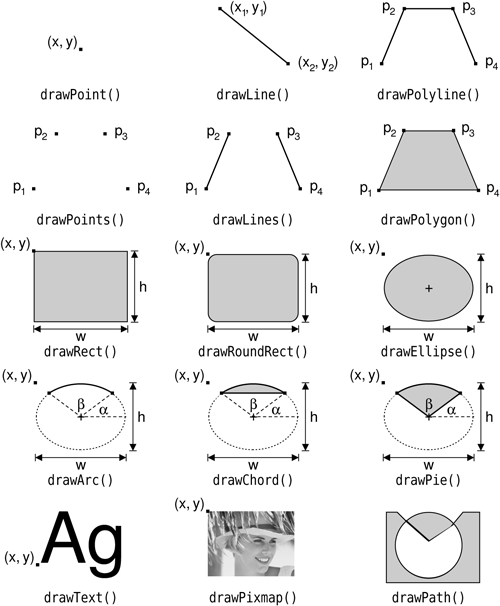
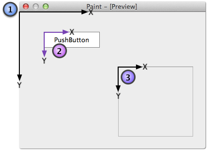
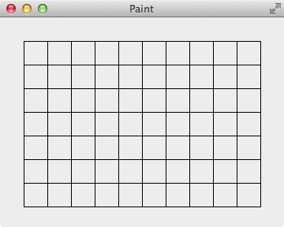
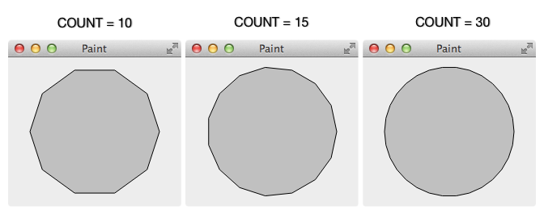
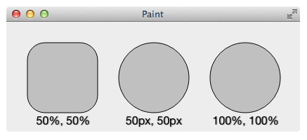
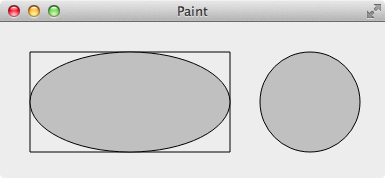
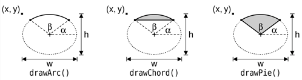
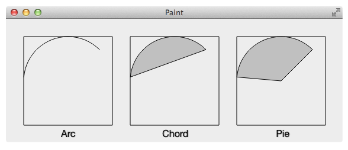

这一节介绍 Qt 的绘图基础知识，我们都知道，Qt 里绘图使用的是 QPainter，但是首先需要弄明白：在什么上绘图和在哪里绘图，然后才是怎么绘图，我们就围绕这几个问题来展开。
在什么上绘图
The QPaintDevice class is the base class of objects that can be painted on with QPainter.
A paint device is an abstraction of a two-dimensional space that can be drawn on using a QPainter. Its default coordinate system has its origin located at the top-left position. X increases to the right and Y increases downwards. The unit is one pixel.
The drawing capabilities of QPaintDevice are currently implemented by the QWidget, QImage, QPixmap, QGLPixelBuffer, QPicture, and QPrinter subclasses.
上面的内容来自于 Qt 的帮助文档，在 QPaintDevice 的子类里用 QPainter 绘图，最常见的就是在 QWidget, QPixmap, QPixture, QPrinter 上面绘图。
在哪里绘图
知道了可以在哪些类中绘图了，总不能在这些类的子类中随便写个函数就可以绘图了吧！这需要分情况，例如在 MainWidget 的构造函数里创建一个 QPixmap，并在它上面画图，然后设置为 QLabel 的 pixmap：
1 | MainWidget::MainWidget(QWidget *parent) |
在非 widget 上绘图，如上面的 QPixmap，在什么地方都可以，但是在 QWidget 及其子类里绘图却没有这么自由，通常都是要在哪个 widget 上绘图，就需要在它的 paintEvent() 函数里绘图，即重写 paintEvent() 函数。
例如类 PandoraWidget 是 QWidget 的子类，要在它上面画一个矩形，它的 paintEvent() 函数如下：
1 | void PandoraWidget::paintEvent(QPaintEvent *) { |
考虑一个问题，PandoraWidget 上有一个叫 magicLabel 的 QLabel，打算在 magicLabel 上画一个矩形，在 PandoraWidget 的 paintEvent() 函数像下面这样用 magicLabel 构造 QPainter，然后绘图可以吗？
1 | void PandoraWidget::paintEvent(QPaintEvent *) { |
运行程序，结果并没有在 magicLabel 上绘制出矩形，而且还输出了下面的错误：
QWidget::paintEngine: Should no longer be called
QPainter::begin: Paint device returned engine == 0, type: 1
QPainter::setPen: Painter not active
QPainter::setBrush: Painter not active
QPainter::drawRects: Painter not active
总是提示 Painter not active，上面提到过：想要在哪个 widget 上绘图，就需要在它的 paintEvent() 函数里绘图，这里的 paintEvent() 函数是 PandoraWidget 的，所以绘图到 PandoraWidget 上成功了，但 paintEvent() 函数不是 QLabel 的，所以企图绘图到 magicLabel 上没成功。
那是不是就是说，如果想在 magicLabel 上绘图，就必须新创建一个类例如叫 MagicLabel，并且继承自 QLabel，然后在它的 paintEvent() 里绘图？如果有 10 个子 widget，都想在上面画点啥，是不是每个 widget 都要对应创建一个类来实现绘图？我就是想画个圈而已，要创建这么多类也太麻烦了，真的想画个圈圈诅咒 Qt 啊。
莫急莫急，这里传大家本人秘藏多年的一绝技，就能在 PandoraWidget 的函数里给 magicLabel 绘图了：在事件过滤器 eventFilter() 中拦截 magicLabel 的 QEvent::Paint 事件，用 magicLabel 创建 QPainter，就可以在 magicLabel 上绘图了，上代码，否则估计有人要把我画在圈圈里了：
1 | PandoraWidget::PandoraWidget(QWidget *parent) |
怎么绘图
下图来自《C++ GUI Programming with Qt 4》，列出了 QPainter 常用的画图方法，都是以 draw 开头，非常直观的列出了绘图函数和绘制出来的图形：

下面具体的介绍这些函数的使用，它们中很多都有重载的函数，这里只使用其中的一种，其它的用法都差不多，就不一一介绍，需要时查看帮助文档就可以了。
坐标系
数学中使用的坐标系是笛卡尔坐标系，X 轴正向向右，Y 轴正向向上。但是，QPainter 也有自己的坐标系，和笛卡尔坐标系有点不一样，原点在 widget 的左上角而不是正中心，X 轴正向向右，Y 轴正向向下。注意: 每个 widget 都有自己独立的坐标系。

画线 - drawLine()
给定 2 个点，使用 drawLine() 画一条线。
1 | void MainWidget::paintEvent(QPaintEvent *) { |
drawLine() 有什么用？例如可以用来画网格线:

1 | void GridWidget::paintEvent(QPaintEvent *) { |
画多线段 - drawLines()
给定 N 个点，第 1 和第 2 个点连成线，第 3 和第 4 个点连成线，……，N 个点练成 (N+1)/2 条线，如果 N 是奇数，第 N 个点和 (0,0) 连成线。
1 | void MultipleLinesWidget::paintEvent(QPaintEvent *) { |
画折线- drawPolyline()
给定 N 个点，第 1 和第 2 个点连成线，第 2 和第 3 个点连成线，……，第 N-1 和第 N 个点连成线，N 个点共连成 N-1 条线。
1 | void PolylineWidget::paintEvent(QPaintEvent *) { |
画多边形 - drawPolygon()
给定 N 个点，第 1 和第 2 个点连成线，第 2 和第 3 个点连成线，……，第 N-1 和第 N 个点连成线，第 N 个点和第 1 个点连接成线形成一个封闭的多边形。
drawPolygon() 和 drawPolyline() 很像，但是 drawPolygon() 画的是一个封闭的区域，可以填充颜色，而 drawPolyline() 画的是一些线段，即使它们连成一个封闭的区域也不能填充颜色。
1 | void PolygonWidget::paintEvent(QPaintEvent *) { |
可以用 drawPolygon() 来画圆，其实本没有圆，正多边形的边多了，便成了圆，这正是计算机里绘制曲线的原理，插值逼近，在曲线上取 N 个点，点之间用线段连接起来，当 N 越大时，连接出来的图形就越平滑，越接近曲线。

1 | void PolygonCircleWidget::paintEvent(QPaintEvent *) { |
为了介绍方便，数组 points 是在 paintEvent() 里创建的，每次调用 paintEvent() 时都会重新生成一次 points，实际项目里可不能这么做，因为 paintEvent() 会被多次的调用，每次调用都会生成 points。数组 points 只有在必要的时候才重新生成，否则就是浪费计算资源，所以可以放到构造函数里，或者点击按钮改变 COUNT 的值后在对应的槽函数里重新生成 points，然后调用 update() 函数刷新界面。
画矩形 - drawRect()
给定矩形左上角的坐标和矩形的长、宽就可以绘制矩形了。
1 | void MainWidget::paintEvent(QPaintEvent *) { |
画圆角矩形- drawRoundRect() & drawRoundedRect()
绘制圆角矩形有 2 个方法：drawRoundRect() 和 drawRoundedRect()，需要给定圆角矩形左上角的坐标、长、宽、圆角的半径。
当 drawRoundedRect() 中第 7 个参数 Qt::SizeMode 为 Qt::RelativeSize 时，表示圆角半径的单位是百分比，取值范围是 [0, 100]，此时 drawRoundedRect() 等价于 drawRoundRect()，其实底层是用这个百分比和对应边长的一半相乘得到圆角的半径（单位是像素）。Qt::SizeMode 为 Qt::AbsoluteSize 时，表示圆角半径的单位是像素。
有意思的是，在 QSS 中圆角半径大于对应边长的一半，圆角效果就没了，但是使用 drawRoundedRect() 时，圆角的半径大于对应边长的一半时，圆角效果仍然有效，个人认为这个是 QSS 的 bug，但是已经存在很久了。
下面使用不同的参数绘制了 3 个圆角矩形，便于比较他们之间的异同：

1 | void RoundRectWidget::paintEvent(QPaintEvent *) { |
画圆、椭圆 - drawEllipse()
给定椭圆的包围矩形（bounding rectangle），使用 drawEllipse() 绘制椭圆。圆是特殊的椭圆，椭圆有两个焦点，这两个焦点合为一个的时候就是一个正圆了，当包围矩形是正方形时，drawEllipse() 绘制的就是圆。
当然，画圆的方法很多，上面我们就使用了 drawPolygon()，drawRounedRect() 的方法画圆，不过从语义上来说，用 drawEllipse() 来画圆显得更适合一些。

1 | void EllipseWidget::paintEvent(QPaintEvent *) { |
画弧、弦、饼图 - drawArc()、drawChord()、drawPie()
画弧使用 drawArc()
画弦使用 drawChord()
画饼图用 drawPie()
把这三个函数放在一起介绍，因为它们的参数都一样，而且 arc, chord, pie 外形也有很多相似之处：
1 | void QPainter::drawArc(const QRectF & rectangle, int startAngle, int spanAngle) |

- rectangle: 包围矩形
- startAngle: 开始的角度，单位是十六分之一度，如果要从 45 度开始画，则 startAngle 为 45 * 16
- spanAngle: 覆盖的角度，单位是十六分之一度
- 绘制圆心为包围矩形的正中心，0 度在圆心的 X 轴正方向上
- 角度的正方向为逆时针方向
下面程序的结果如图：

1 | void ArcChordPieWidget::paintEvent(QPaintEvent *) { |
修改 startAngle 和 spanAngle 为负值看看是什么效果。
绘制 QPixmap - drawPixmap()
1 | void MainWidget::paintEvent(QPaintEvent *) { |
绘制 QImage - drawImage()
1 | void MainWidget::paintEvent(QPaintEvent *) { |